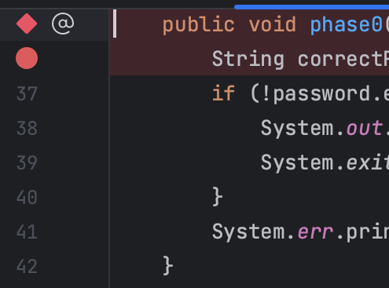
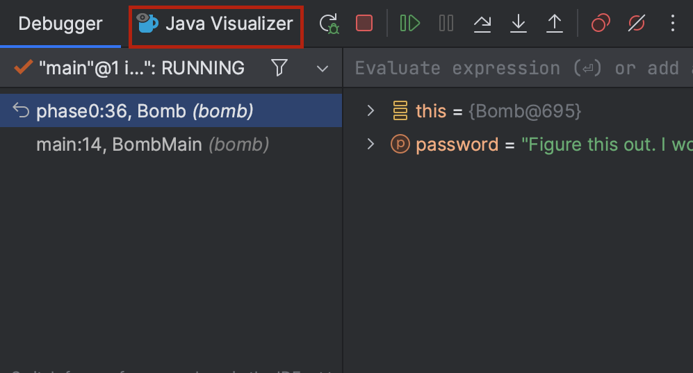
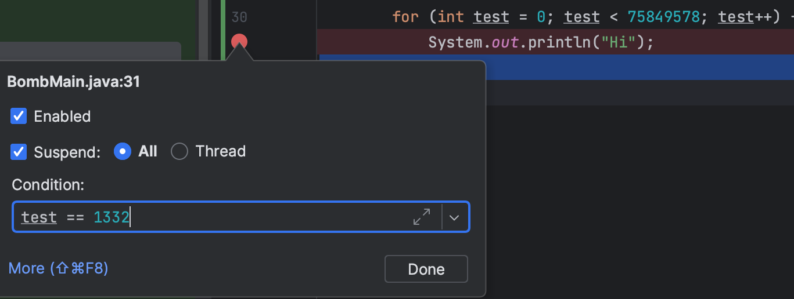

Lab 02: Debugging (Part 1)
FAQ
Each assignment will have an FAQ linked at the top. You can also access it by adding “/faq” to the end of the URL. The FAQ for Lab 02 is located here.
Introduction
To debug a program, you must first know what’s wrong. In this lab, you’ll get some experience with using the debugger to see the program state. When you run into a bug, the error is accompanied with a “stack trace” that details the method calls that caused the error in the first place. We won’t cover going through the stack trace in this lab, but we’ll talk more about it in a later lab.
Setup
Follow the assignment workflow to get the assignment and open it in IntelliJ.
Goals and Outcomes
In this lab, you will enhance your code debugging abilities by defusing a (programmatic) bomb. We’ll guide you through this process, but the intention is to make this a realistic debugging experience.
By the end of this lab, you will…
- Be able to use the debugger and visualizer to inspect program state.
- Be able to interpret test failure messages.
- Be better able to approach debugging code.
For this lab and course in general, we highly encourage that you try things out on your own first, including looking things up if you’re unsure what something is. In this lab, this might be about what a certain error means or the exception that is thrown - google it!
Bomb
The BombMain class calls the various phase methods of the Bomb class.
For this lab, we’ll be running the lab through the tests in BombTest.java.
If you were to run BombTest (in the testing folder), you’ll notice that there are some errors -
this is because the current inputs to the phase methods in BombMain aren’t the
correct passwords! Your job is to figure out what the passwords to each of these phases
is by using the IntelliJ debugger.
WARNING: The code is written so that you can’t find the password just by reading it. For
this lab, you are forbidden from editing the Bomb and BombTest code, whether to add
print statements or otherwise modify it. The point of this exercise is to get comfortable
using tools that will help you a lot down the road. Please take it seriously! If you modify those
files, you will not pass the tests on the autograder!
As mentioned, you’ll be running your code from BombTest.java in the testing folder
and you can use those tests to help you debug, as on other assignments, you will
end up writing your own tests to help you fix bugs! The only file you
need to modify is BombMain.java
BombTest.java is where you will be running the program. Bomb.java and BombMain.java
will not have the green run button since it does not contain a static void main(String[] args)
so please make sure to run the program through BombTest.java!
Interactive Debugging
So far, you might have practiced debugging by using print statements to see the values of certain variables as a program runs. When placed strategically, the output from printing might help make the bugs obvious or narrow down their cause. This method is called print debugging. While print debugging can be very useful, it has a few disadvantages:
- It requires you to modify your code, and clean it up after.
- It’s tedious to decide and write out exactly what you want to print.
- Printing isn’t always formatted nicely.
In this lab, we’ll show you a new technique, interactive debugging – debugging by using an interactive tool, or a debugger. We’ll focus on IntelliJ’s built-in debugger.
Debugger Overview
Breakpoints
Before starting the IntelliJ debugger, you should set a few breakpoints. Breakpoints mark places in your code where you can suspend the program while debugging and examine its state. This:
- Doesn’t require you to modify your code or clean it up after, since breakpoints are ignored in normal execution.
- Lets you see all the variables without needing to write print statements.
- Lets IntelliJ display everything in a structured manner
Go ahead and open up Bomb.java and place a breakpoint. To set a breakpoint,
click the area just to the right of the line number.

A red circle or diamond should appear where you clicked. If nothing appears, make sure that you click next to a line with code. When the debugger reaches this point in the program, it will pause before the execution of the line or method. Clicking the breakpoint again will remove it.
Running the Debugger
Now, let’s set a few breakpoints - you can do this either in Bomb.java or BombMain.java.
With these set, we can start a debugging session! Click on the green triangle next to the
class or test you want to debug (in test files there may be two green triangles).
Instead of clicking the green triangle to run, click the
debug option:

The selected program should run until it hits its first breakpoint. A debugger window should also appear on the bottom of the interface, where the console was.

On the left, you will be able to see all current method calls and on the right, you will be able to see the values of instantiated variables at this point in the program (they will also be shown in gray text in the editor). For instances of classes, you can click the dropdown to expand them and look at their fields.
In the debugger, you have a few options:
- Learn something from the displayed values, identify what’s wrong, and fix
your bug! Click
 to stop the debug session.
to stop the debug session. - Click
 to resume the program (until it
hits another breakpoint or terminates).
to resume the program (until it
hits another breakpoint or terminates). - Click
 to advance the program by
one line of code.
to advance the program by
one line of code.
 does something similar, but
it will step into any method called in the current line, while
will step over it.
does something similar, but
it will step into any method called in the current line, while
will step over it. will advance the program until
after it returns from the current method.
will advance the program until
after it returns from the current method.
- If you accidentally step too far and want to start the session over, click
 (at least right now, there isn’t a good way to directly
step back).
(at least right now, there isn’t a good way to directly
step back).
Bomb Introduction (Phase 0)
For this lab, we will be providing method breakdowns if you want an overview of the method/phase that you’re debugging.
Set a breakpoint at phase0 and use the debugger to find the password
for phase0 and replace the phase0 argument accordingly in
bomb/BombMain.java. You can start the program from testBombPhase0 in
tests/bomb/BombTest.java.
Once you’ve found the correct password, running the code (not in debug mode)
should output You passed phase 0 with the password \<password\>! instead of
Phase 0 went BOOM!
phase0 Method Breakdown
phase0 Method BreakdownThe phase0 method first generates a secret String correctPassword (you don’t
need to understand how shufflePassword works). The password passed in from
BombMain is then compared against correctPassword. The goal of this phase is
to use the debugger to find the value of correctPassword and pass in a
password that matches that value!
Visualizer (Phase 1)
For this portion of the lab, we’ll be working with IntList. If you need a quick recap,
refer to the relevant lecture slides from this week.
Adding to our implementation of IntList are two methods that may not have been
mentioned: print and of. The of method makes it more convenient to create IntLists.
Here’s a brief demonstration of how it works. Consider the following code:
IntList lst = new IntList(1, new IntList(2, new IntList(3, null)));
That’s a lot of typing for just a list of 1, 2, and 3 (quite confusing too)!
The IntList.of method addresses this problem. To create an IntList containing
the elements 1, 2, and 3, you can simply type:
IntList lst = IntList.of(1, 2, 3);
The other method print returns a String representation of an IntList.
IntList lst = IntList.of(1, 2, 3);
System.out.println(lst.print())
// Output: 1 -> 2 -> 3
Back to debugging - while being able to see variable values is great, sometimes we have data that’s
not the easiest to inspect. For example, to look at long IntLists, we need to
click a lot of dropdowns. The Java Visualizer shows a box-and-pointer diagram of
the variables in your program, which is much better suited for IntLists. To
use the visualizer, run the debugger until you stop at a breakpoint, then click
the “Java Visualizer” tab. The tab is outlined in red below.

The password for phase 1 is an IntList, not a String. You may find the
IntList.of method helpful.
Set a breakpoint at phase1 and use the Java Visualizer
to find the password for phase1 and replace the phase1 argument accordingly
in bomb/BombMain.java. You can start the program from testBombPhase1 in
tests/bomb/BombTest.java.
phase1 Method Breakdown
phase1 Method BreakdownThe phase1 method generates a secret IntList called correctIntListPassword
(similar to the previous phase, you don’t need to understand how
shufflePasswordIntList works). The password (in the form of an IntList)
passed in from BombMain is then compared against the correctIntListPassword
for equality. The goal of this phase is to use the debugger’s Java Visualizer to
find the structure and value of the correctIntListPassword’s IntList and pass
in a password that matches it!
Conditional Breakpoints (Phase 2)
Consider a program that loops 5000 times - trying to step through each time to find the error wouldn’t be too efficient. Instead, you would want your program to pause on a specific iteration, such as the last one. In other words, you would want your program to pause on certain conditions. To do so, create a breakpoint at the line of interest and open the “Edit breakpoint” menu by right-clicking the breakpoint icon itself. There, you can enter a boolean condition such that the program will only pause at this breakpoint if the condition is true. It will look something like this:

Another thing you can do is to set breakpoints for exceptions in Java. If your
program is crashing, you can have the debugger pause where the exception is
thrown and display the state of your program. To do so, click
 in the debugger window and press the plus icon to create a “Java Exception
Breakpoint”. In the window that should appear, enter the name of the exception
that your program is throwing.
in the debugger window and press the plus icon to create a “Java Exception
Breakpoint”. In the window that should appear, enter the name of the exception
that your program is throwing.
Set a breakpoint at phase2 and use the debugger to find the password
for phase2 and replace the phase2 argument accordingly in
bomb/BombMain.java. Remember, don’t edit Bomb.java! You can start the program
from testBombPhase2 in tests/bomb/BombTest.java.
NOTE: The password isn’t given explicitly like in the previous phases. Rather, your task is to “try to find it” using a conditional breakpoint.
phase2 Method Breakdown
phase2 Method BreakdownThe phase2 method takes in your password from BombMain.
The method adds 100,000 random integers to a Set called numbers. It
then loops through them using a for-each loop, incrementing a variable i as it
goes along. On the 1338th iteration (because Java is zero-indexed, i == 1337
on iteration 1338), we check whether your password is equal to the current
number.
At this point, you should be able to run the tests in tests/bomb/BombTest.java
and have all of them pass with a green checkmark.
Deliverables and Scoring
Make sure you did not edit Bomb.java or BombTest.java. There are tests
on the autograder that check if you edited those files and you will not pass
if there are changes in the file (this includes adding comments). The
local tests prevent you from editing Bomb.java, but not BombTest.java
(this is only on the autograder), so do not touch those files!
The lab is out of 5 points.
- Find all the passwords in
BombMain.javaand ensure that you pass all tests locally before submitting to Gradescope.
Submission
Just as you did in Lab 1, add, commit, then push your Lab 2 code to GitHub. Then, submit to Gradescope to test your code. If you need a refresher, check out the instructions in the Lab 1 spec and the Assignment Workflow Guide.
Acknowledgements
This assignment is adapted from Adam Blank.**